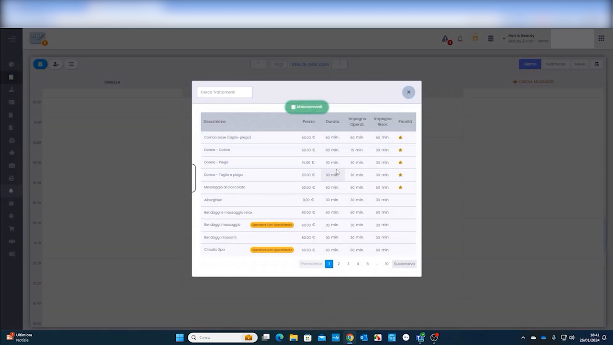
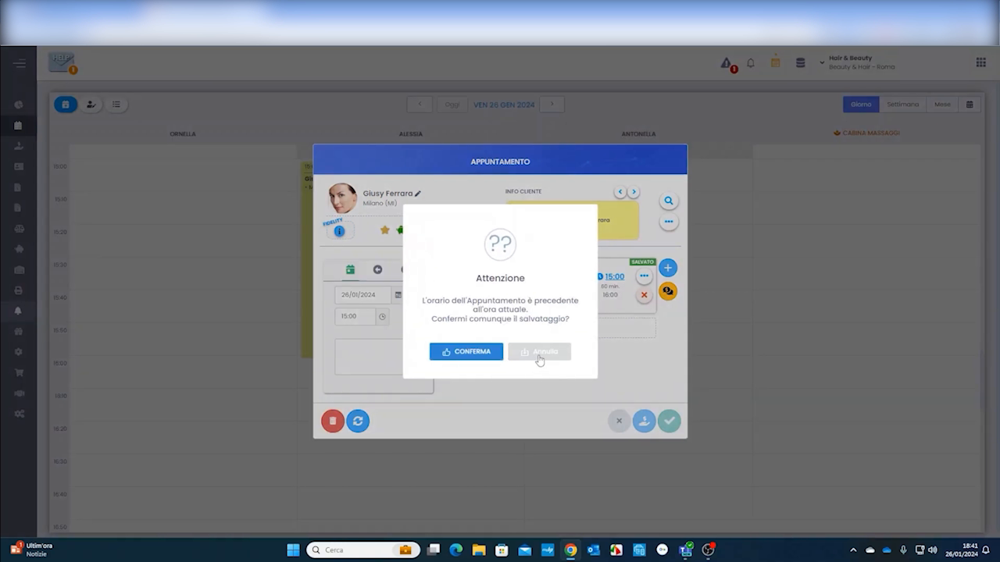
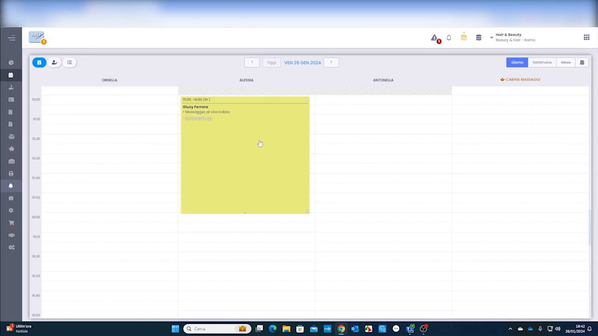
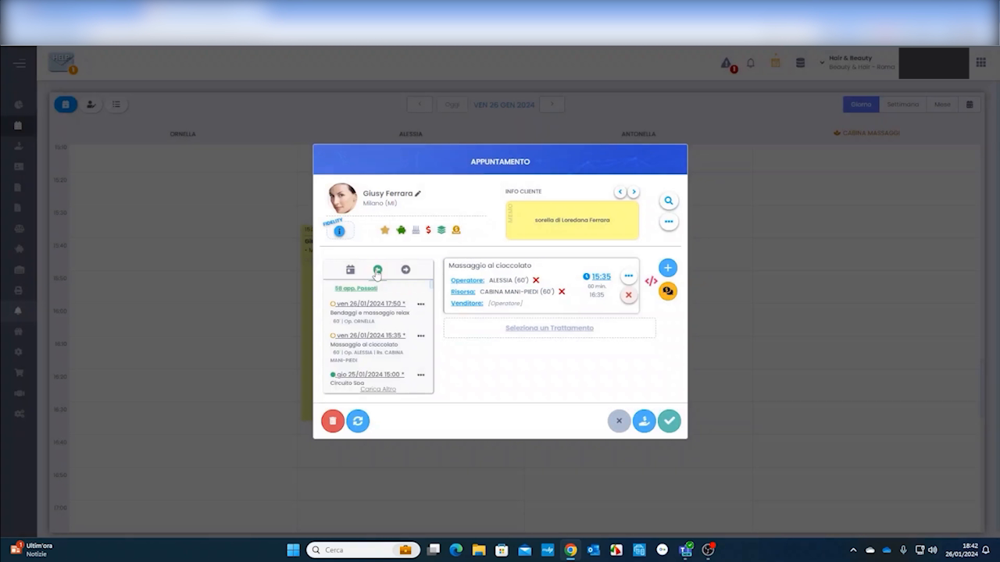
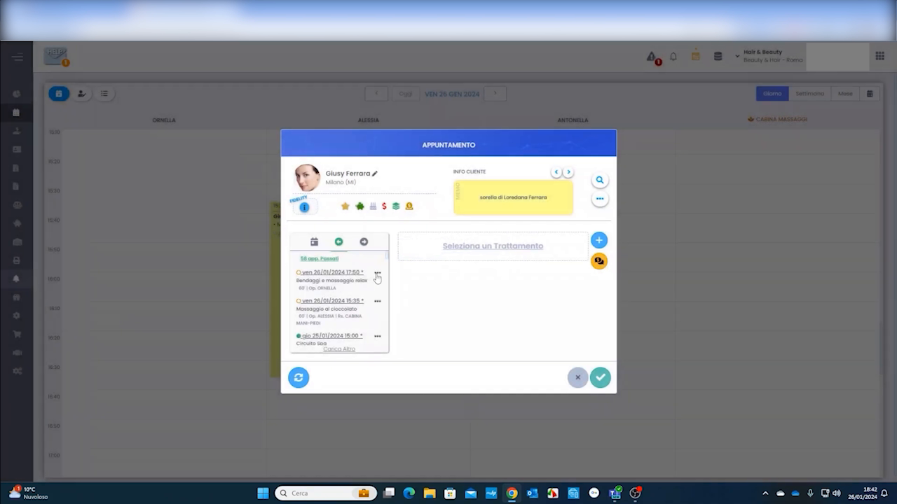
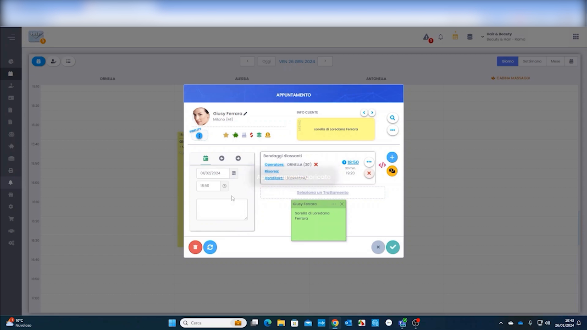

Presa Appuntamento
La creazione di un appuntamento è l'operazione più frequente in HyperBeauty. Dal Planning è possibile prenotare un cliente in pochi secondi: si seleziona la fascia oraria, si sceglie il cliente, si aggiunge il trattamento e si salva. Il gestionale gestisce automaticamente l'assegnazione dell'operatore e della risorsa.
Aprire la finestra appuntamento
Percorso: Planning → click sulla colonna dell'operatore nell'orario desiderato
Cliccando su una fascia oraria libera in agenda si apre direttamente la finestra APPUNTAMENTO con la data e l'orario precompilati.
In alternativa, l'appuntamento può essere creato anche da Cassa per una vendita diretta senza blocco in agenda (es. vendita prodotto al banco, cliente walk-in).
Selezionare il trattamento

Nella modale appuntamento, cliccare + Seleziona Trattamento per aprire la lista dei trattamenti disponibili. Per ogni voce sono visibili:
| Colonna | Descrizione |
|---|---|
| Descrizione | Nome del trattamento |
| Prezzo | Prezzo di listino |
| Durata | Durata totale del blocco in agenda |
| Impegno Operatore | Minuti in cui l'operatore è attivamente impegnato |
| Impegno Risorsa | Minuti in cui la risorsa fisica è occupata |
Usare il campo di ricerca in alto per filtrare rapidamente. Cliccare + AGGIUNGI accanto al trattamento scelto.
Badge 'Qualcuno sta prenotando'
Alcuni trattamenti mostrano un badge arancione che segnala che un altro operatore o un cliente sta prenotando quello stesso slot in contemporanea — utile nei saloni con più postazioni di lavoro attive.
Conferma orario

Se l'orario selezionato è antecedente all'ora corrente, il sistema mostra un avviso di conferma:
"L'orario dell'Appuntamento è precedente all'ora attuale. Confermi comunque il salvataggio?"
Cliccare CONFERMA per salvare comunque — utile per inserire appuntamenti già avvenuti o correggere prenotazioni.
L'appuntamento in agenda

Dopo il salvataggio, il blocco appuntamento appare nella colonna dell'operatore assegnato con:
- Nome del cliente
- Nome del trattamento
- Orario di inizio e fine (es. 15:00 – 16:00, 1h)
- Colore dell'operatore o del trattamento (in base alla modalità configurata)
Se la sede ha risorse configurate (cabine, lettini), queste appaiono come colonne aggiuntive nel Planning — la risorsa occupata mostra il medesimo blocco in parallelo.
Dettaglio e modifica dell'appuntamento

Cliccando su un appuntamento in agenda si riapre la finestra con tutti i dettagli:
- Scheda cliente — foto, icone di stato (sospeso, prepagata, abbonamento, compleanno), stelle fidelity
- Storico appuntamenti — lista delle visite precedenti visibile nel pannello sinistro
- Trattamento — con operatore e risorsa assegnati, orario di inizio, condizioni commerciali applicate
- "Sostituisci un Trattamento" — per cambiare il trattamento mantenendo il cliente e la data
Le icone colorate accanto al nome cliente riassumono la sua situazione economica a colpo d'occhio — utile per segnalare sospesi aperti o crediti disponibili prima di iniziare il servizio.
Aggiungere più trattamenti allo stesso appuntamento

Un appuntamento può contenere più trattamenti consecutivi per lo stesso cliente. Dalla finestra appuntamento aperta cliccare il pulsante + in alto a destra per aggiungere un secondo (o terzo) trattamento.

Selezionando il secondo trattamento (es. Bendaggi Rilassanti) il gestionale mostra in tempo reale una miniatura dell'agenda che evidenzia il blocco aggiuntivo — permettendo di verificare la disponibilità prima di confermare. I trattamenti multipli si accodano automaticamente senza sovrapposizioni.
Riepilogo presa appuntamento
| Passo | Azione |
|---|---|
| 1 | Planning → click sulla fascia oraria desiderata nella colonna operatore |
| 2 | Cercare e selezionare il cliente (o crearlo al momento) |
| 3 | Cliccare + Seleziona Trattamento e scegliere dalla lista |
| 4 | Verificare operatore e risorsa assegnati |
| 5 | Salvare — il blocco appare immediatamente in agenda |
| 6 | (Opzionale) Aggiungere ulteriori trattamenti con il pulsante + |
Documento a cura di Custom S.p.a. — HyperBeauty Training Program — Versione 1.0 — Giugno 2026